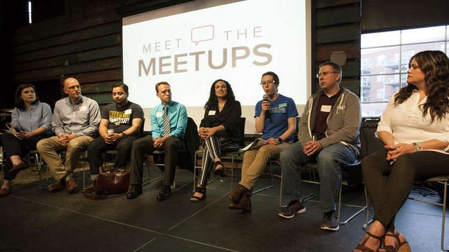

In any moment of decision, the best thing you can do is the right thing, the next best thing is the wrong thing, and the worst thing you can do is nothing
Theodore Roosevelt
Why people are so busy to make an important decision for their future?
Nowadays, people are so busy to decide about their own life and their future.
People always dream to have a better life where they could travel all over and explore the world while making money at the same time, work from home, and have time to spend with families and friends.
find meetup around your area.
There are so many ways to make that dream happen. For instance, you might think to become a lawyer, doctor, or engineer, which is great. However, web development can get you there as soon as possible.
find meetup around your area.
I have been seeing people who are logically thinker and have abilities to become a web developer, but they don’t even know who they are and the value they can bring to the world because they have this misconception that programming needs to be taught by an expert like college, or coding bootcamp.
On the other hands, I saw people who are very interested in coding, very motivated to learn on their own,but they don’t know where to start, and which resources to use and how to use them properly.
If you really want to learn to code and land your first job, you are very lucky to find this article.
Now, lots of factors are going to come in when it comes to learn how to code. depending of each individual, personality and your background, there are different paths to learn web development, and all of them reach to same point.
There are different ways to reach to the same point.
If you are reading this article. I guess it is because you want to take one of the major decisions of your life. You might work two, three or even more jobs right now to survive,you might be 18 years old teens just came out from high school, you might have family to provide for, you might always have this dream to work from home or open your own company, travel and discover the globe or you might have studied something unrelated to web development and now you are stuck in student debt. whatever reason you can come up with, if you want to learn web development, and you don’t know which path to choose, don’t worry, I will break down step by step each path you can use to learn how to code and make that virtual dream into reality.
You might be wondering why I specifically talk about web development amongst others programming or jobs out there?
Well, in my experience, web development is one of the fastest ways that people can take to land their first job as programmer. Unfortunately, fastest way doesn’t mean easiest way, but if you have a grit and determination, you can get a job as web developer as soon as possible.
Now depending of which road, you take, it might be long or short. But anyway, you are going to hit the milestone as programmer. Amongst so many ways that exist to become a web developer, there are three ways that I will be talking in this article, which are getting a college degree, going to bootcamp, or self-teaching yourself
It doesn’t matter which route, you take, all of them are great and we get you a great future. However, each of them has advantages and disadvantages.
The structure of computer science programs
for many decades, we have been taught to succeed in life, we are going to have to take a formal education, but the question is that what exactly does have a formal education in computer science teach you? Well, it starts with algorithms, a couple of programming languages, how to work with IDE’s, the functioning of an Operating System, basics of networking, a couple of tidbits on Artificial intelligence and a structured and sequential way for learning them. We can see that school program is well-structure and have a specific time frame. Therefore, you know exactly what you’ll be learning, and when you’ll be ending up.
computer science curriculum
Another advantage of going to college is that they help you build your curriculum. After graduating, it is very easy to set up your resume and apply for job. For instance, when you graduate from college, it is very easy to get an interview ( being interviewing doesn’t guarantee a job) because most companies out there tend to trust people who have a piece of paper.
graduation's day is amazing
the power of networking
In addition, graduating from college opens a big networking to different people. For example, if you are kind of person who knows how to go along with people you will definitely build your network, and that could ultimately help you land your first job.
Even though going to college opens more opportunities in terms of
Structure, networking, and so on, there are so many disadvantages.
Student’s debts is the worst ones
student's debts is worst
Again, student’s debt is one of the worst things people don’t want to get themselves in.
Going to college is very expensive. Having a computer science requires lots of money and time. For example, if you just choose to go in your local community college, you will find out, it might cost you between $10000 to $20000/year depending on where you live. It means that you might end up with $100000.00 debt to pay back or even more.
In addition, you will be spending time to learn something unrelated in your future. for instance, you will be spending time learning foundation of bunch of programming languages without being proficient in one. You will be also building project of 1940 nonrelated to the latest technology. The worst thing about college is the fact that most of professors who teach there haven’t gotten in the real world, and they want each one to learn about those crazy data structure and algorithms that can’t really help you if you want to become a web developer.
Another disadvantages of going to college is that there are so many subjects unrelated to your field.
Again, let’s say you study computer science, you will have to take some classes in Economic, English, historic, communication, art, sport and so on.
Those courses are great but can’t help you improve your skills as programmer. Why spending time for something you won’t be used in your future when there are lots online plates-forms where you can learn them in your spare time?
Luckily, we live in amazing world nowadays where we can lately take those courses online in the cheapest prices without making colleges and universities to become even richer.
Although there are so many advantages when it comes to go to college, there are also so much disadvantages of that.
Because there are so many subjects unrelated and unnecessary when you study computer science or related field to that , If you count in terms of percentage how much computer science classes are taught in 4 years, you will find out, the percentage of your specialization would be as less as 20%. Meaning that your specialized field is 20% or less within 4 years. Now, what is the point of studying in college? Well, this is where people who understand how school’s system works created a bootcamp in order to implement those percentages in the real world.
If you don’t know what the bootcamp is? It is basically a short period program specialize to give people the skills they need to know in order to get their first job as web developer. Like college, bootcamp has advantages and disadvantages.
The first advantage of going to bootcamp is that: it will teach you the skills you need to know in order to land your first job as web developer.
For instance, bootcamp is very great because his focus is to teach you what you really need to know in order to get hired in few months. In fact, it gives you fundamentals of programming so that you can learn the rest on your own later on.
Another advantage is networking.

find meetup around your area.
Bootcamp is very great place to be in because it has connection with any size of companies whether it is small, medium or large, startups, career fairs and digital agencies. Bootcamp can branch you up if you really perform well in class. In addition, you can have a job just by being friendly with your classmates.
The second advantages of going to bootcamp is that bootcamp gives structure.
like college, the bootcamp gives you list of programs that you will be going through during a set period of time. Generally, bootcamp is between 3 to 6 months period. Because web development is the fastest way to land job nowadays, most bootcamps tend to teach html, CSS, java script, python and some frameworks. If you are new to programming and don’t understand these words, don’t worry. Keep reading!
The third advantages of going to bootcamp is that they help you build your resume and apply for job.
The best thing about going to bootcamp is the fact that you will have something to show off to the future employers. Most of the bootcamps have different full stack projects that you will be working on at the end of the program from scratch. ( fortunately, you will have to choose your personal project at the end of the bootcamp.)
The fourth advantages of going to bootcamp is that it teaches you how to find answer.
In my experience, one the most important things that web developers need when they just started out is where to find solution if they get stuck. Bootcamp is great for those kind of resources since most people who teach there had been working or still working in the real world. Bootcamps help you to use key word when you seek for an answer in resources such as Stack overflow, google and other blogs post out there. Furthermore, bootcamp can solve most of your inquiries in class.
Like going to college, bootcamps also have disadvantages.
Bootcamp can be a little quite expensive depending on where you live.
Bootcamp is expensive (again, not like a college). Joining bootcamp most of the time costs between $10000 to $20000 depending on where you live, ( you might have to do some research if you are looking to join one later) , which is something that you have to pay up front. They also give you option to pay later. For example, there is one bootcamp called App academy, which is very well-structure, and one of the best bootcamps of United States. This bootcamp takes %23 of your 2- or 3-years salaries depending on where you live to cover their expensive. Therefore, you will end up paying twice, triple or even more what you were supposed to be paying up front.
The third disadvantages of joining bootcamp is that you have to quit your daily job.
Bootcamp generally has an intensive program that requires each candidate to quit his job in order to line up with the programs.
Again, you learned something that people lately spend 4 years in college in 3 months. You need to really dedicate yourself in.
The fourth disadvantages of joining bootcamp is that people will retain less than 50% of what they have been taught in 3months.
Many scientists have proved that after studying more than 4 hours a day, you brain tend not to retain anything, which is true according to my own experience, however, depending of each individual, your brain might retain above 4 hours but according to my research not more than 8 hours.
The matter of fact is that most bootcamps generally teach between 10-12 hours a day, which is impossible to absorb all resources that they provide to you in that set period of time. Remember that if you are planning to go to bootcamp, you will be studying that way for at least 3 months period.
Unlike college degree, bootcamp is less expensive. The most important things is your commitment. Again, bootcamp, doesn’t teach you to become professional web developer, Unfortunately, there are lots material to learn in order to be called web developer, however, as beginner, you really need to basic to move forward. There is a book written by Malcolm Gladwell's 10000 Hour Rule who basically says that you can master any kind of skills in those amounts of hours. instead, bootcamps teach you foundation of programming languages that could give you lots wings to start learning on your own.
Finally, the last and the most efficiently way to learn how to code (at least for me, because this is how I learned to code) is the self-taught route.
As many other ways, we have already talked before, it has his ups and downs.
There are so many advantages for being a self-taught programmer.
like going to college or joining bootcamp, self-taught programmers have big advantages when it comes to programming.
The first advantages of teaching yourself is the time management.
We live in amazing world where people are exposed to so many technologies and resources that they can use for free such as YouTube, Udemy, Udacity, coding phase, Lynda.com and so on. those plaques-forms, however, have also some paying courses.
But the best about teaching yourself is that you can learn as much as you want before buying courses that you might think to help you build your portfolio. You can learn whenever you want without having someone in your back.
You can organize your schedule and achieve your goals very quickly
self taught helps to save tons of money.
find meetup around your area.
Comparing to coding bootcamp where you will spend at least $10000 within a period of three months, with the self-taught route, you can even spend no money or decide to pay some courses online, which will be way cheaper than going to college or joining a bootcamp.
Also, if you use all these resources online effectively, to be honest, you will not need to buy any kind of online courses
Self-taught can adapt himself quickly in the real world.
Comparing to coding bootcamp where you will spend at least $10000 within a period of three months, with the self-taught route, you can even spend no money or decide to pay some courses online, which will be way cheaper than going to college or joining a bootcamp.
Also, if you use all these resources online effectively, to be honest, you will not need to buy any kind of online courses
Most of the companies out there are managed by self-taught. The fact that they don’t have any formal education and able to get hired prove how hard they work to get where they are.
Also, self-taught adapt himself quickly because he already had that mentality that he can use resources like stack over flow, google, w3school and so on to figure things out. As best example, According to the StackOver Flow 2018 Survey, 87% of respondents taught themselves a new programming-language / technology.
If you look big companies such as Google, Facebook or Amazon, you will find out most self-taught move to the senior level quicker than people who had gone for 4 years degree programs.
The last advantage but not the least is that you will master skills.
For example, when I started teaching myself coding, I lately spend no money but because I knew so many people, I was able to focus on the right Material.
That ultimately landed me a job after 3months 2 weeks, and I could’ve done even less than that.
All about self-teaching yourself are great. However, there lots of downside when teaching yourself.
you don’t know where to start and where to end.
Nowadays, we are surrounded by endless resources. the perfect examples are YouTube, books, Udemy, Udacity, blog post, coding phase and so on.
Because of those resources available to us, self-taught programmer tend to use all these resources at the same time. Therefore, they end up wasting way more time than they should. Moreover, most people spend even more than 2 years to have their first job just because they are so many resources and people as I have said don’t know where to start. For instance, when you teach yourself coding, you will see people recommend you one resource over others because they might have taught themselves that way.
most of the self-taught dont have a structure while teaching themselves coding.
Another downside of self taught is that you don’t know when you are ready to apply for job.
Most of time, people already had the skills needing for the real world, but because they don’t have anything to evaluate or measure their skills, they will likely waste time or wait until someone might tell them that they are ready to apply
Also, one of the big problems about teaching yourself is not to having a roadmap. Unlike other skills, programming for example requires to code daily so that you can completely immerge yourself and submit your brain in the new language. because there are no external pressures such as college, university or bootcamp where people are behind you to keep you accountable, people who teach themselves end up giving up or take even more than 4 years to understand code than people who join either bootcamp or college.
Finally, the another problem with self-taught is the fact that they might know where to find solution for their problems but don’t know how to ask question.
Again, one of the big advantages of joining bootcamp is the fact that they teach people how to break problem down and use resources available to them to figure things out without involving anyone, which is something that is huge for someone who teaches himself code specifically self-taught programmer who has no one to ask for help.
Now, if you really want to learn how I learn how to code, please go ahead and check out this article :how I learned to code and best advice for beginner.
I guess you have a broad overview about each path to take in order to become a web developer.
depending of your personality type, you might have to go to college, join a bootcamp or teach yourself (one of the best route to choose).
Now that you know all about those pathways, if you want to code faster by focusing on the right Materia, I highly recommend to sign up in:codingphase.com
if you are looking for mentor, you can reach out to my mentoring program by sign up: www.fonoandy.com or you can email me on fonoandy@gmail.com. I promised you, you will be surprised how your life will change in 3months. Again, 3 months no more than that.
I know the article was very long but what is the takeaway to get out of it?
Again, depending of each individual, if you want to spend 4 years of your life in addition to over $100000 debt for something that unrelated in your future, you can go for computer science or another program related to that. In the other hands, if you like do things in faster period and able to dedicate time and energy, I recommend you go bootcamp. Finally, if you are kind of person who are very discipline, meticulous, organize and might not even have money for bootcamp but knowing you can spend time learning on your own, I recommend you the self-taught route.
If you have already decided to take a self-route, but you are wondering where to start and what is the best resource only to start with, don’t worry,
check out the best group for beginner and medium CodingMindset Community.
What are you waiting for?
sorry for skipping the introduction part.
I am Gabriel Andy , and I am self-taught programmer
My goal is to help people all over around the world to achieve their dream
Here's wishing you luck on your journey.As always, my inbox is open to anybody in need of further advice or have questions.
Currently, the website has some issues with the backend-server. Therefore, subscribe to my new letter is not possible at this time. feel free to join me on facebook by clicking down below